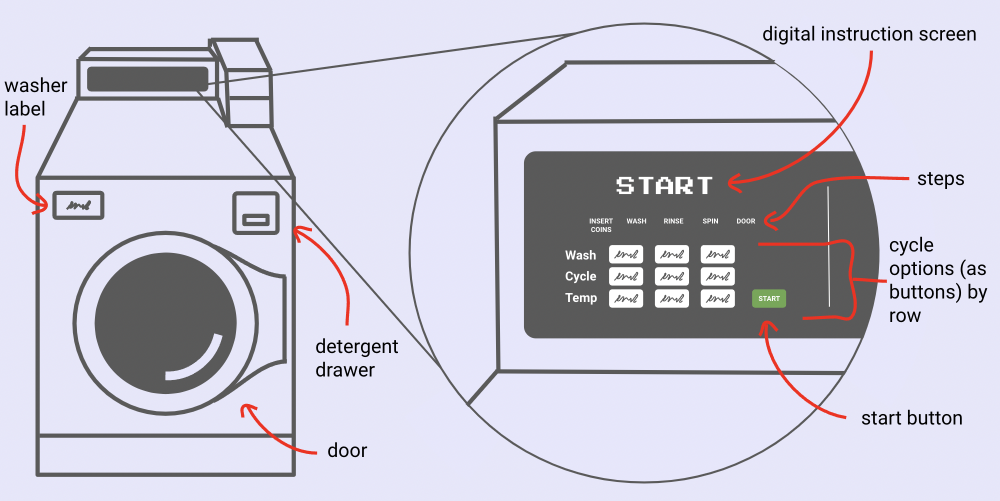
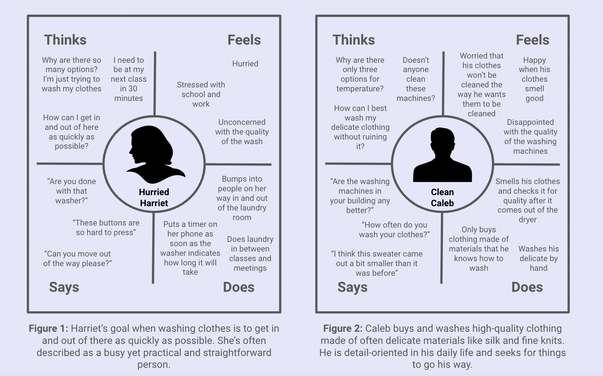
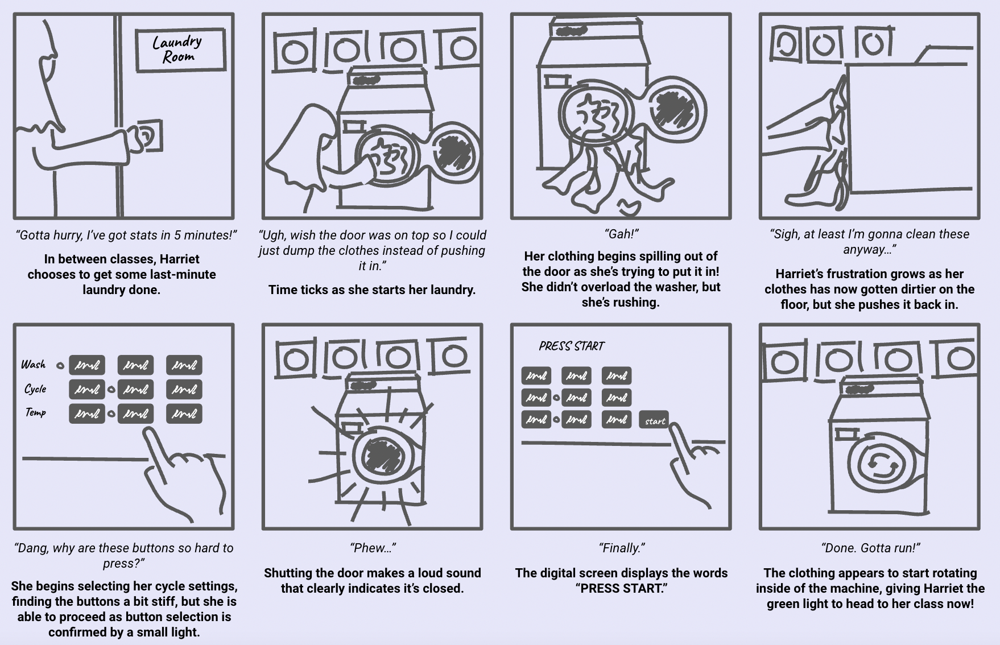

Personas & Storyboarding
As part of an exploration of user experiences at my university,
I chose to observe and record students’ contact with our washing
machines in order to synthesize their feedback into two user personas
and a storyboard. The goal was to understand how students interacted
with these machines in more particular and nuanced ways, incorporating
personality and motivations into this assessment of user experience.
The Interface: an Overview

A typical washing machine at Brown University appears as depicted above,
with this particular illustration being modeled after a machine in my
residence hall. The washer’s interface attempts to bridge the gap between
the individual and their end goal—to clean their soiled clothing—as cleanly
and efficiently as possible. The key components here include the digital
instruction screen that prints the words “PUSH START,” a clearly labeled start
button, a display of unique wash, cycle, and temperature options as buttons,
and the large central door through which the user is to place their clothes.
User Observations
I was able to observe three separate students while they interacted with the
washing machines, and several key findings are listed below. For the sake of
clarity and privacy, they have been labeled Student 1, Student 2, and Student 3.
- All three students used laundry pods as opposed to liquid or powder detergent,
meaning none of them interacted with the built-in detergent drawer.
- The wash/cycle/temp selections, respectively, of each user were as follows:
regular, normal, warm (Student 1), regular, normal, cold (Student 2), and
regular, normal, cold (Student 3).
- All three students spent more time loading clothing into the washer than
they did interacting with the machine and its interface (note: it may be
relevant that, at the time of these observations, laundry services were
complementary, meaning the time spent did not include any time swiping cards
or inserting coins).
- Unlike Students 1 and 2, Student 3 paused for a moment after starting the
washer, observing the machine for a few seconds before ultimately leaving
after the clothing started rotating.
I also formulated three questions designed to solicit more insight about users’
unique experiences and expectations with this interface. This was implemented as
a brief survey sent out to willing participants living in my residence hall. Listed
below are the questions and a brief summary of the responses received for each one:
- Is there anything about the washing machines that either exceeds or fails to
reach your expectations when preparing to do laundry? If so, what?
- A general sense of disappointment with the quality of the machines was
expressed, with only a few examples of interface-specific complaints (no
examples of exceeding expectations were given).
- One respondent referenced the cycle option buttons for being difficult
to press (i.e. too flat).
- Another stated that the digital instruction screen often glitched,
displaying only parts of certain letters, and that even when it didn’t,
the instructions displayed could be vague and confusing.
- The washing machines’ overall structure was referenced, with one user
stating that unloading the machines felt awkward and clunky because she has
to crouch
- What elements of the washing machines’ digital or physical interface would
you say you interact with the most while doing laundry? The least?
- The most common answers included the cycle option buttons, the start button,
and the door.
- Only one respondent stated that they interacted with the detergent drawer
the most, although no respondents stated that they interacted with it the least.
- If you do or have done laundry elsewhere (e.g. home, hotel, laundromat,
etc.), what similarities or differences do you notice between your experience
using the washing machines there and using them here?
- One response stressed the difference between their washer at home and those
on campus, stating that their home washer offers several options for things
like materials (cottons, synthetics, woolens, etc.) and even spin speed.
- The same respondent expressed a preference for their experience at home, although
they did mention the washing process can take slightly longer.
- Many respondents omitted this question, presumably due to lack of laundry. experience
off campus, but those who did not generally expressed a preference for their other washing
experiences, citing higher quality machines and better buttons.
User Personas
Synthesizing all of the data and feedback collected above, I designed two personas to represent
some of the overarching trends observed.

The persona in Figure 1, Harriet, represents an archetypal college student whose characteristics
were overwhelmingly discerned from users’ feedback. The interface problems she may face include
low instructional specificity (either on the digital instruction screen or on the steps provided),
poor physical functionality (i.e. stiff buttons), and overwhelming choice (in relative terms, given
as she seeks as streamline of a process as possible).
Caleb, seen in Figure 2, encompasses the subset of users who are more concerned with the condition
of their clothing after the wash than they are with time and efficiency. His interface problems could
include a low range of choices, particularly as it pertains to temperature and delicates, and perhaps
even low instructional specificity as well.
Storyboard
The final element to this exploration was the culmination of everything observed and recorded prior: a
storyboard depicting the user experience of one of my personas, Hurried Harriet. Here, our character goes
through what is, for her, a typical experience with this interface.
